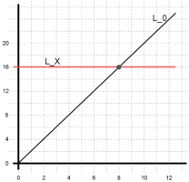
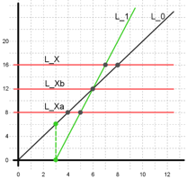
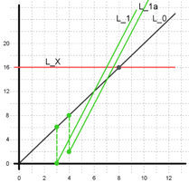
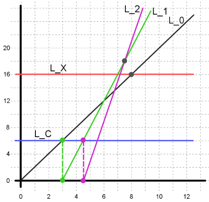

In this problem, we need to decide on the number of cookie farms to buy and also need to decide on when to buy the farms.
The strategy is perhaps surprisingly simple: first, collect enough cookies to buy a farm. Then figure out whether it's faster to buy one farm and then collect X cookies, or simply to collect X cookies now. If it's faster to collect X cookies now, you should do that. If it's faster to buy a farm first, buy that farm and then repeat this process (collect enough cookies to buy another farm...).
It's very easy to say that, but it's not as easy to prove it works. How many farms might you end up buying? If it's in the billions, your program might be too slow, and we never proved it wouldn't be. We also didn't prove that it's best to buy a farm right away as soon as you have enough cookies. The rest of this editorial will go into those questions in detail.
We build the intuition for the solution by using geometry. We represent the problem in the 2d plane. Let the x-axis represent time (in seconds) and the y-axis represent the number of cookies. Initially, we gain cookies at the rate of 2 cookies per second which is shown by line L0 in Figure 1. Let’s say the target number of cookies (X) is 16. We can represent it with line y=16 (LX). This means that if we do not buy any cookie farm then the time it takes to get 16 cookies is given by the intersection between LX and L0. See Figure 1.

Figure 1
Now, let’s delve into what happens (geometrically speaking) when we buy a cookie farm. Let’s say the cost for buying a cookie farm (C) is 6, and the extra cookies per second (F) is 2. In Figure 2, we buy a farm as soon as we have 6 cookies. This means at time = 3, we go from having 6 cookies to 0 cookies (to pay for the cookie farm), and our cookies per second increases to 4. This information is represented by L1 in Figure 2. Note that the dashed lines represent the drop of current cookies when we buy a cookie farm. Notice that L0 and L1 intersect at the 6 second mark (and correspondingly, X=12 cookies). It means that, if our target number of cookies X is anywhere between 0 and 12 then it is not advantageous to buy a cookie farm! Why? Let’s look at an example line LXa which is in that range. In Figure 2, we see that L0 intersects LXa earlier (at 4 second mark) than L1 intersects LXa (at 5 second mark). At X = 12 (represented by LXb), it does not matter if we buy a cookie farm or not. But if X is higher than 12, for example X = 16 (represented by LX), we should buy a cookie farm since L1 intersect LX earlier (at 7 second mark) than L0 (at 8 second mark). Jumping ahead briefly, we notice a similar behavior for the intersection between L1, L2 and LX in Figure 4 (we'll describe how we compute L2 in subsequent paragraphs). If we choose X = 18, it doesn't matter if we choose L1 or L2, but if X is below 18 then L1 intersection is better than L2 intersection, but if X is above 18 then L2 intersection is better than L1 intersection.

Figure 2
Now we discuss the strategy for how early we should buy a cookie farm i.e. should we buy a cookie farm as soon as we have C cookies, or should we wait a little longer before buying a cookie farm? We claim that we should buy a farm as soon as we have C cookies (and not wait any second longer).

Figure 3
In Figure 3 as before, L1 represents buying a cookie farm as soon as we have 6 cookies (at 3 second), while L1a represents delaying buying a cookie farm by a second (at 4 second). Note that L1 and L1a are going to be parallel to each other (i.e. they have the same rate: 4 cookies for second) but L1 is located to the left of L1a. What does this mean? It means that the intersection between any line LX and L1 will always be at an earlier time than the intersection between LX and L1a. Therefore we should not wait to buy cookie farms any more than needed. This means that if buying a cookie farm contributes to your winning strategy, then we should buy a cookie farm as soon as possible, i.e. as soon as we have C cookies.
In Figure 4, we can observe that the earliest time to buy the first cookie farm is on the intersection of line L0 with line LC (y=C). Then, the earliest time to buy the second cookie farm is on the intersection of line L1 with LC.

Figure 4
Now, we are ready to describe our solution strategy. We first determine the time t0 it takes to get X cookies without buying a cookie farm (i.e. intersection between L0 and LX). Then we try to buy 1 cookie farm and figure out the time t1 it takes to get X cookies (i.e. intersection between L1 and LX). Then compute t2 for buying another cookie farm (i.e. intersection between L2 and LX), and so on. We stop when tn+1 is greater than tn (i.e. we do worse, in terms of time, by buying an additional cookie farm). For example, in Figure 4, we do worse with L2 than with L1 (intersections with LX). We finally report tn as our winning time.
A note on doing the actual line intersection computation follows. We want to compute the line intersections between lines L0, L1, L2, etc and y = C or y = X. Let our current line be Ln starting at (Sn, 0) and have a slope of m (i.e. cookies per second after buying n cookie farms). Note that s0 is 0, and m = 2 + n * F. Then the time required to get A cookies is given as: Sn + A / m.
Our solution strategy mentioned above iterates until a winning condition is achieved. But you might be wondering about total iterations needed before we are done. We want to point out that the number of iterations is bounded. In the solution strategy, we noted that the stopping condition for iteration is when we do worse (in terms of time) when buying an additional farm. Let’s formulate that as an equation. Let’s say our current iteration is i with line Li with the next line being Li+1. The intersection between line y = X and Li is given as ti = si + X / (2 + i * F), and similarly intersection between line y = X and Li+1 is given as ti+1 = si+1 + X / (2 + (i + 1) * F). We stop when ti+1 > ti. Note that si+1 - si = C / (2 + i * F). After going through some math, we get i > (X / C) - 1 - (2 / F), which is the iteration when ti+1 becomes bigger than ti. Therefore the iteration should terminate around X / C.